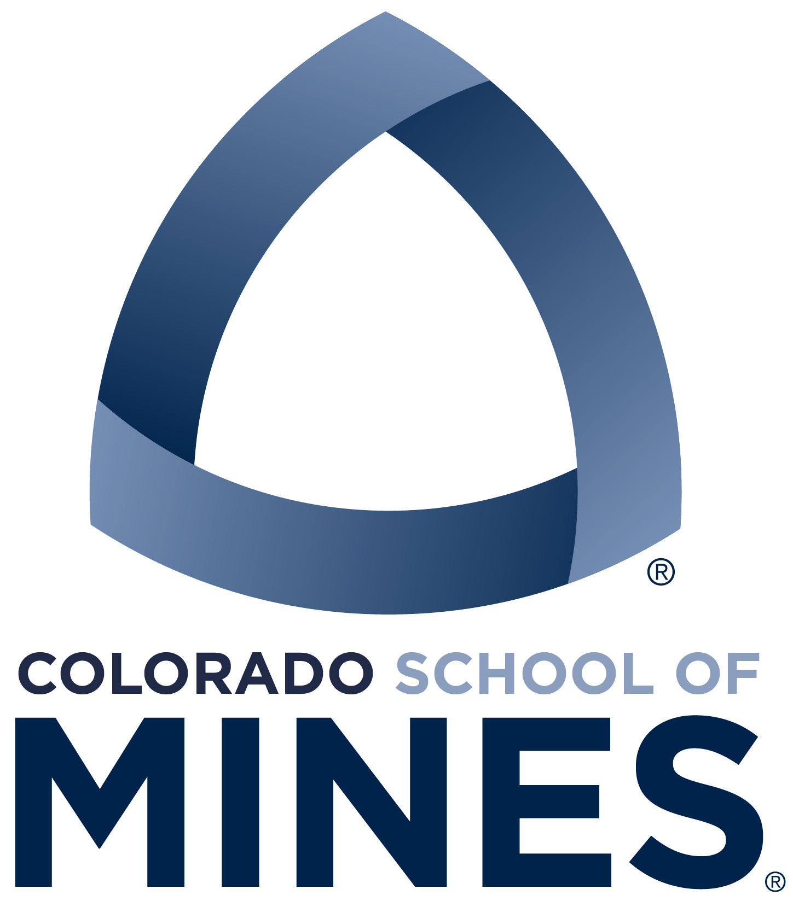

Hello there! I am an energetic computer scientist, creative problem solver, and powerful communicator who is passionate about technical dexterity, environmental ethics, social justice, and collaboration in a time when intelligent systems and modern algorithms are changing the way people interact with computers, each other, and the world.
In complement to my journey as a computer scientist, I am also a writer, philosopher, musician, and filmmaker.
#pride #loveislove #teamtrees #westutter
We’ve come too far 🧗🏽♂️ to give up who we are 🙌 So lets raise the bar 🏋🏽 and our cups 🥂 to the stars 🌠
How to navigate this site
Aristotle, the esteemed Greek Philosopher, believed that there exists three basic activities for the human mind: theoria, poiesis, and praxis. In honor of Aristotle’s wise teachings and historic legacy, I have structured my website by these three activities:
📖 Theoria: Activities for the sake of learning and truth seeking. My theoria will consist of journalism, book reviews, tech articles, and the like.
💻 Poiesis: Activities for the sake of production. My poiesis will consist of projects in all disciplines (software, art, video, etc.)
✈️ Praxis: Activities for the sake of action. My praxis will consist of blog posts documenting my experiences (travel, conferences, food, etc.)
Contact Information
I am best reached via email: jlovato@mines.edu
Phone: 720-299-0136
General Experience
Below are a few highlights from my career (academic and beyond). A formal resume is available upon request (jlovato@mines.edu)
+ Academics

Colorado School of Mines, Golden, CO
M.S. December 2022 Computer Science, Non-Thesis (current)
B.S. May 2021
Major: Computer Science + Computer Engineering
Minor: McBride Honors Program – Minor in Public Affairs
Academic Roles
I have worked across campus in various roles, primarily as assistants/adjuncts to undergraduate CS courses
- CSCI262 (Data Structures) TA; Lead TA; Adjunct Instructor
- CSCI101 (Intro to Computer Science) TA; Lead TA; Peer Mentor
- Mines Marketing and Communications Assistant (video production; video editing)
- Harvey Scholars Communications Coordinator
- Harvey Scholars 10th Anniversary Video Committee Lead
- oSTEM (Mine’s LGBTQ+ Organization) Secretary, Grad Student Liason
+ Industry
- VTO (Summer 2018): Digital Forensics
- Lockheed Martin Space (Summer 2019): Embedded C++ software for SmartSat
- Lockheed Martin Space (Summer 2020): Test scripting (TCL) for Lucy Spacecraft
- Lockheed Martin Space (Summer 2021): Mission operations flight rule development (Python) for the Lucy Spacecraft
- Tyler Technologies (Summer 2022): C# Web Development